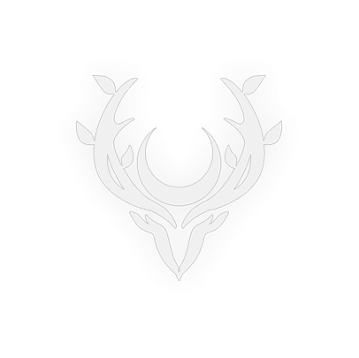

Nod-Krai · Organizations & Factions
Frostmoon Scions
The Frostmoon Scions are a community on Hiisi Island whose moon-centered traditions were reformed by Aila and are changing again after Lauma reveals what lies beyond Teyvat’s False Sky.

A moon-centered community on Hiisi Island
The Frostmoon Scions are a community on Hiisi Island in Nod-Krai. Their religious practices honor the Frost Moon, and they regard kuuvahki as sacred; some consider using kuuvahki devices an improper use of the Moon’s blessing. That is a Scion belief, not a rule shared by everyone in Nod-Krai.
Lauma is the group’s Moonchanter in the current story. Her unusual ability to communicate with animals is described as rare among the Scions, rather than a power every member shares.
Lovia’s Sacred Heir scheme and Aila’s reforms
The Scions’ older history is not only a record of peaceful rites. Around five centuries ago, Archpriestess Lovia pursued a Sacred Heir project as the community’s power and rituals weakened. She forced twins Aila and Alia into a brutal attempt to strengthen their bloodline, presenting that abuse as religious duty.
Aila eventually killed Lovia, ended the Archpriestess office, and abolished the Hyperborean rites. She became the first Moonchanter and changed the community’s practices. The later role of Moonchanter and the present traditions therefore reflect a reform, not an unchanged institution stretching back to antiquity.
Hymns preserve a revised tradition
Hymns of the Far North is one record of the Scions’ religious tradition. Its verses have a history of revision: Aila changed hymns as part of her reforms, so a surviving song may preserve later choices as well as older belief.
Aila also witnessed Kuutar’s birth and offered her the first drop of silver blood. The Scions came to worship Kuutar as the Frost Moon’s successor and made statues in her image. This history of devotion does not mean Kuutar granted every prayer or endorsed every demand made in her name.
Kuutar, Columbina, and the false moon
In the current story, Kuutar is known as Columbina, the Fatui Harbinger called the Damselette. After leaving the Fatui, she returns to Hiisi Island and Lauma gives her a place to rest. The Scions’ ties to her are personal and religious; the story does not reduce the group to an instrument for the Fatui or for Columbina.
Lauma later reveals that the moon visible in Teyvat is false and that the true Frost Moon lies beyond the False Sky. She tells the Scions that Kuutar was born of the moon, while warning them that this does not entitle them to take without giving or to treat worship as a guarantee of favors.
A reform still in progress
Lauma says she hid the truth because she feared what it would do to her family, then decides the Scions deserve to hear it. Some members leave after her announcement; others thank her. She accepts that reactions differ and does not claim the revelation immediately settles the community’s future.
The quests show a group negotiating inherited faith, secrecy, and change. Its history is told through hymns, artifacts, and characters with different memories, so the record keeps those sources distinct and avoids treating one leader’s account as the whole of Nod-Krai’s history.
This is an original CoreGG reading guide, not an official HoYoverse article or a reproduction of the game text. Source links below identify the records used so you can check the original context.
Sources & references
Check these sources for the original game text and reference trail.
- Genshin Impact Wiki · lore reference
- HoYoverse · Version Luna I Update Details
- Genshin Impact Wiki · In the Shadows of Night (quest transcript)
- Genshin Impact Wiki · A Long Day in the Mountains (quest chain)
- Genshin Impact Wiki · Hymns of the Far North
- Genshin Impact Wiki · Moonweaver’s Dawn weapon description